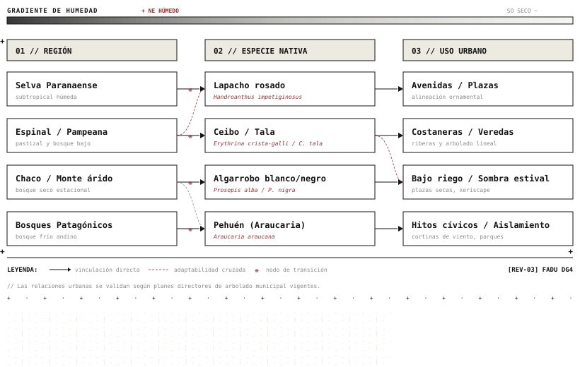

Capítulo 2 · Regiones y paisajes
Una gran diversidad de ambientes
La Argentina abarca ambientes muy distintos, desde selvas subtropicales hasta bosques fríos de montaña. Cada región tiene su propia flora característica.
| Región | Ambiente | Especie representativa |
|---|---|---|
| Selva Paranaense | Selva subtropical húmeda | Lapacho rosado |
| Yungas | Selva de montaña | Cedro salteño |
| Chaco | Bosque seco | Quebracho colorado |
| Espinal | Bosque bajo y pastizal | Algarrobo |
| Bosques Patagónicos | Bosque frío de montaña | Pehuén (araucaria) |
Las diferencias entre regiones responden sobre todo a la cantidad de lluvia, a la temperatura y al tipo de suelo. A grandes rasgos, la humedad disminuye de noreste a sudoeste, y con ella cambia el tipo de vegetación: de la selva densa al bosque seco, al pastizal y a la estepa.
Relaciones entre regiones, especies y usos
Para organizar la información relevada, el siguiente esquema vincula cada región con algunas de sus especies representativas y con los posibles usos de esas especies en la ciudad.

El caso de la región pampeana
En la llanura pampeana predominaba el pastizal y los árboles nativos eran escasos, como el tala y el ombú. Por eso muchas ciudades de la región se arbolaron con especies traídas de otros continentes.
Esta historia explica por qué en ciudades como Buenos Aires el paisaje arbolado que hoy parece "natural" está formado, en gran parte, por especies exóticas. Recuperar especies nativas de la región, o de regiones cercanas con clima similar, es una de las líneas de trabajo del arbolado urbano actual.